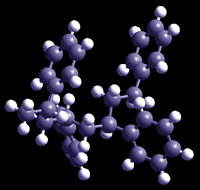

|
|
Polymer SynthesisStep Growth Synthetic step growth polymers have been around since the late 1920s. The term condensation polymerization comes from this time period, because the early reaction yielded water. More recently it has been found that several other polymer reaction will condense out products such as HCl or will condense out no products. Step growth polymerization is used to yield branched as well as networked polymers. The true initator of a network structure lines in a multifunctional monomer. As the length and frequency of branches on the polymer chain increases so does the probability that the branches will reach from chain to chain. When all the chains are connected together the entire polymer mass becomes one giant molecule. Consider a bowling ball, it has a molecular weight on the order of 10**27 g/mol, and it is one giant molecule. Crosslinked or network polymers form in one of two ways:
|
|||||||||||||||
|  | |||||||||||||||
| Chain Growth Chain growth polymerization involves an active chain site which reacts wiht an unsatureated (or heterocyclic) monomer such that the active site is recovered at the chain end. Vinyl polymers were probably the first to be synthesized in this manner when in 1839 Simon reported the conversion of styrene to some gealtinous mass. In general, high molecular weight species are made by the successive addtion of new monomers to the chain end. There are several different techniques of synthesis depending on the active site. These are:
|